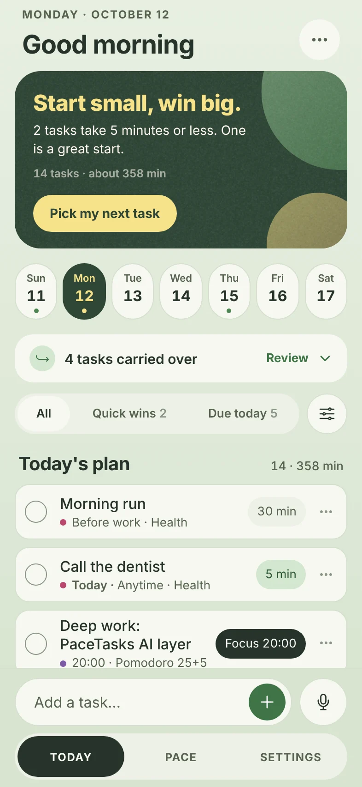
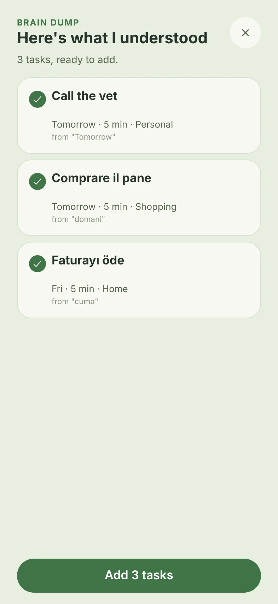
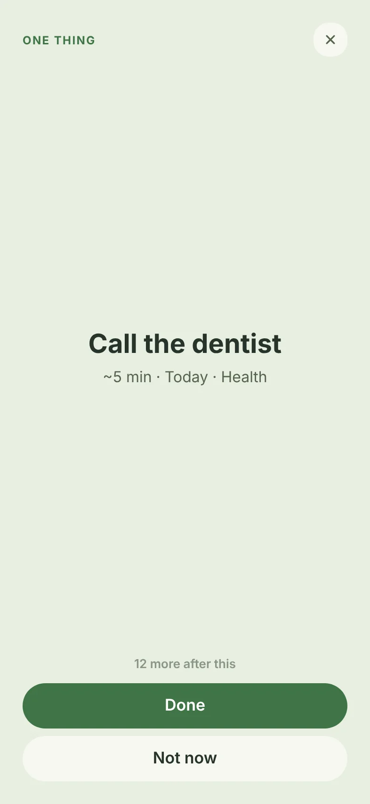
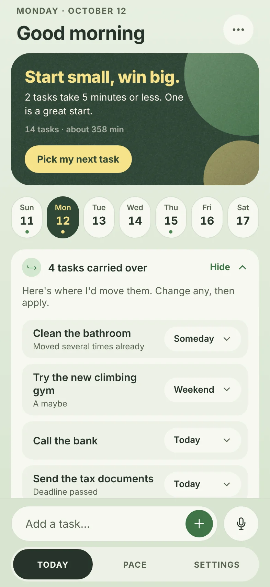
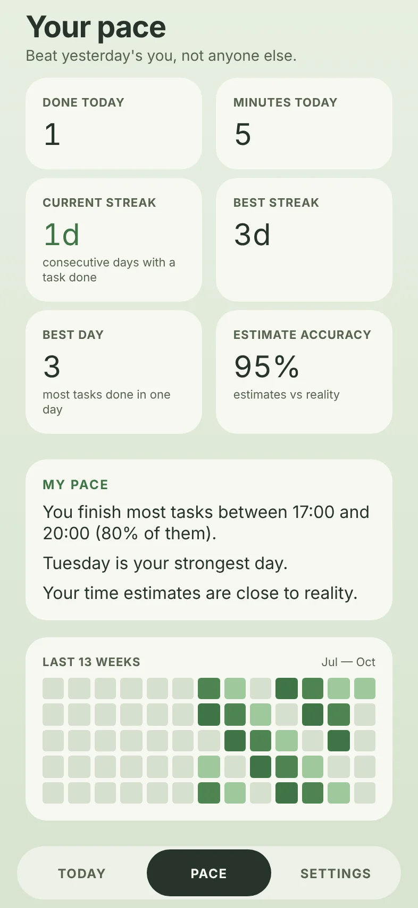

PaceTasks capisce come farle entrare nella tua vita. Annota le attività appena ti vengono in mente, poi portale a termine prima o dopo il lavoro, con il tempo e l'energia che hai davvero.
In arrivo su iPhone, con DeskFocus per il tuo Mac incluso.

Oggi
Focus su
Scegli un'attività nel widget DeskFocus e premi Inizia. Le attività di PaceTasks nel widget arriveranno presto. La demo usa attività di esempio e nulla di ciò che scrivi lascia il tuo browser.
L'app delle attività che si organizza intorno al tuo lavoro, alla tua energia e al tuo ritmo— ecco PaceTasks
PaceTasks Pro
Di' tutto in una volta.
Scrivi o detta. Al resto pensa PaceTasks.
Tocca il microfono e di' tutto ciò che hai in mente, in inglese, italiano, turco o un misto. PaceTasks mostra le attività che ha capito, con i loro giorni, prima di aggiungere qualcosa.
“Tomorrow call the vet, domani comprare il pane, cuma günü faturayı öde”

Incluso in PaceTasks
Sceglie lui per te.
Non sai decidere? Tocca Scegli la mia prossima attività.
Decidi per me mostra una sola attività: una vittoria rapida finché ce n'è una, poi ciò che conta di più. Adatta al mio tempo chiede quanto tempo hai, da cinque minuti a un'ora, ed elenca le attività che ci stanno.

Incluso in PaceTasks
Le attività non finite trovano un nuovo giorno.
Gli avanzi di ieri non si accumulano.
Una riga in Oggi propone dove mettere ogni attività non finita: oggi, domani, nel weekend o prima o poi. Cambia ciò che vuoi, poi applica. Quando le attività aspettano da troppo, Weekly Reset te le fa rivedere una alla volta.

La storia con PaceTasks Pro
Gareggia solo con il tuo ritmo.
Supera la tua versione di ieri, non gli altri.
I numeri di oggi sono gratis. Con Pro, Il mio ritmo aggiunge la tua settimana e la tua storia: serie, minuti, una mappa di 13 settimane e quanto le tue stime si avvicinano alla realtà, e dopo dieci attività finite, frasi semplici su quando fai di più.

Incluso con PaceTasks
La tua scrivania, a fuoco.
DeskFocus mette sul tuo Mac la lista di oggi e un timer per il focus.
Quando ti siedi a lavorare, DeskFocus tiene sulla scrivania l'attività che hai davanti, fa partire il suo timer e nasconde le app che ti distraggono. Presto arriverà anche la tua lista di PaceTasks.
DeskFocus è pronto da scaricare per Mac. PaceTasks si sta preparando alla sua prima beta su iPhone; nel frattempo la demo fa funzionare l'intera app nel tuo browser con attività di esempio.
Mi serve un Mac per usare PaceTasks?
No. PaceTasks funziona da solo sul tuo iPhone. DeskFocus aggiunge la scrivania del Mac per le ore in cui ti siedi a lavorare.
Quando compariranno in DeskFocus le mie attività di PaceTasks?
Presto, con un aggiornamento di entrambe le app. Oggi DeskFocus mostra Calendario di iCloud, Promemoria di iCloud, Google Calendar e Google Tasks.
Quanto costa Pro?
€24,99 all'anno con 7 giorni di prova gratuita, €3,99 al mese, oppure €59,99 una volta per sempre. L'App Store mostra il prezzo per il tuo paese. Un solo Pro copre PaceTasks e DeskFocus; pianificare la giornata resta gratis.
Posso avere un rimborso?
Sì, entro 14 giorni dall'addebito, per qualsiasi motivo. Le regole sui rimborsi spiegano come fare per gli acquisti su App Store e Paddle.
Esiste una versione per Android?
Non ancora. PaceTasks è per iPhone e DeskFocus per Mac.
La demo conserva ciò che scrivo?
No. Funziona interamente nel tuo browser con attività di esempio, e tutto si azzera quando ricarichi.